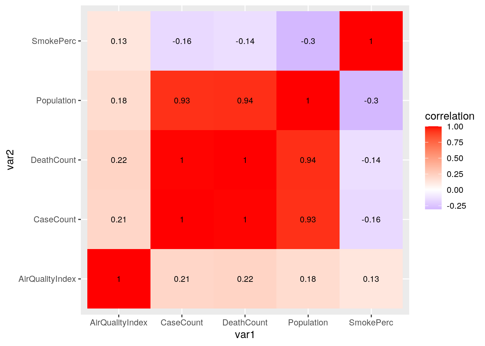
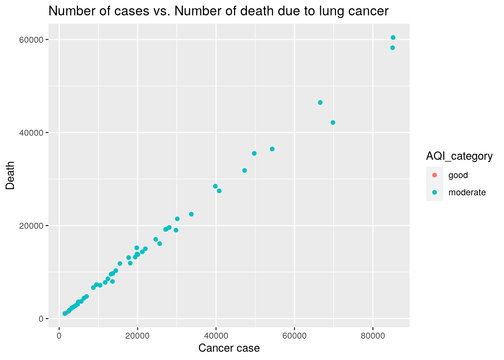
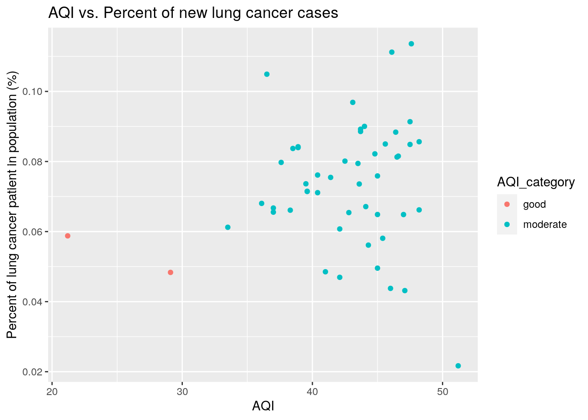
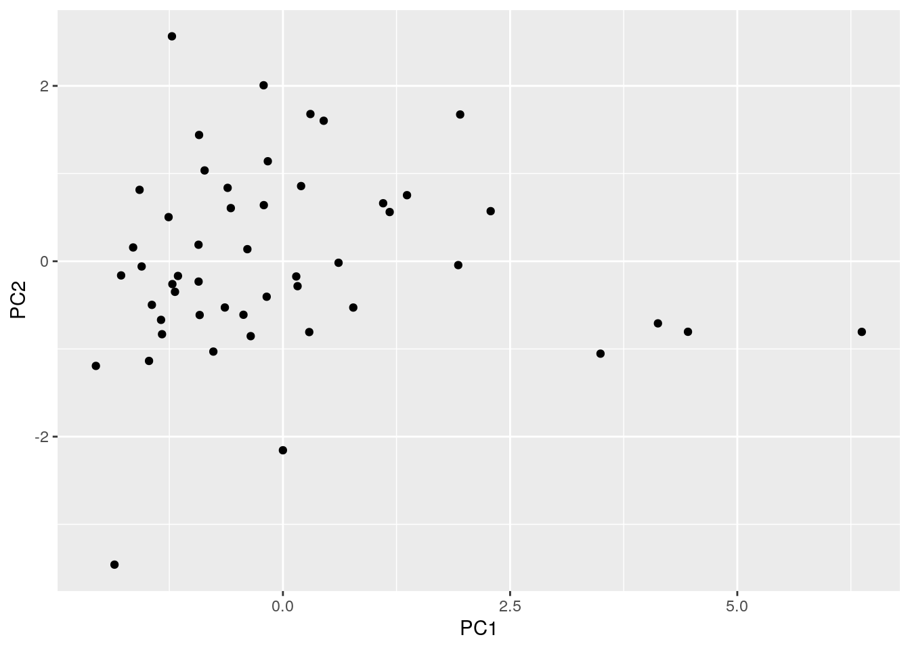
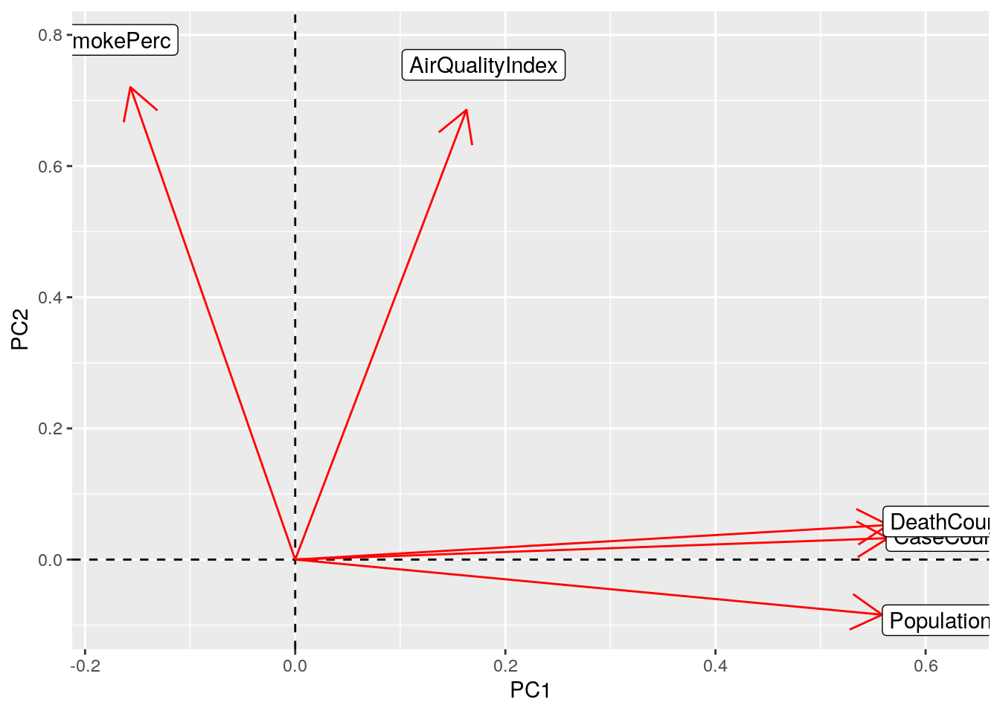

One of my family member was diagnosed with lung cancer 2 years ago. I was very surprised by that because she was not a smoker, heavy drinker, or having a family history of cancer. Since her life was not even close to all the high risk factors of lung cancer, I thought air pollution might have some effects on her disease. Therefore, I decided to find whether there is a relationship between air pollution and the lung cancer. For this project, there are four different datasets; The first dataset contains number of new cancer patients registered as lung and bronchus cancers in 2017 by each state and their population, the second dataset contains the percentage of cigarette use by adults in 2017 by each state, the third dataset contains average air quality index measured in 2017 by each state, and the last dataset contains the number of people who died from lung and bronchus cancer in 2017 by each state. These datasets are combined based on their common variable ‘state’.
library(tidyverse)
# Load lung cancer cases dataset
lung_cancer <- read_csv("p1data/USCS.csv")
# Load smoking percentage dataset
smoking <- read_csv("p1data/smoking.csv")
smoking <- smoking[-54, ]
# Load air quality index dataset
aqi <- read_csv("p1data/AirQuality.csv")
aqi <- aqi[, -3]
# Load lung cancer death counts dataset
death <- read_csv("p1data/USCS_death.csv")
death <- death[, -c(3:8)]
# Join Datasets
allData <- full_join(lung_cancer, smoking, by = c(Area = "Location"))
allData <- full_join(aqi, allData, by = c(State = "Area"))
allData <- full_join(allData, death, by = c(State = "Area"))
# Delete unnecessary columns
allData <- allData[, -c(3:7)]
# Rename column with appropriate name
allData <- rename(allData, SmokePerc = Data_Value)Datasets are loaded, and they are joined by variable ‘state’ since it is a common variable for all four datasets
After the datasets are joined into one, ‘CancerType’, ‘Year’, ‘Sex’, and ‘Race’ columns are dropped since there are no variation in these columns.
The column ‘AgedAdjustedRate’ which contais adjusted age rates that help fair comparisons between groups with different age distribution, was also dropped since it will not be used in data analysis. However, dropping this column might cause some biases because there are definitely higher rate of death in the state having higher percentage of elderly people.
# Drop NAs in dataset
allData <- allData %>% drop_na()
# Find number of observations in dataset
allData %>% n_distinct()## [1] 50After NAs are dropped, there are 50 unique observations in the dataset.
# Find max, min values for numeric variables using
# filter()
allData %>% filter(AirQualityIndex == max(AirQualityIndex) |
AirQualityIndex == min(AirQualityIndex))## # A tibble: 2 x 6
## State AirQualityIndex CaseCount Population SmokePerc DeathCount
## <chr> <dbl> <dbl> <dbl> <dbl> <dbl>
## 1 Hawaii 21.2 4172 7098107 13.4 2798
## 2 Utah 51.2 3245 14963554 9 2279allData %>% filter(CaseCount == max(CaseCount) | CaseCount ==
min(CaseCount))## # A tibble: 2 x 6
## State AirQualityIndex CaseCount Population SmokePerc DeathCount
## <chr> <dbl> <dbl> <dbl> <dbl> <dbl>
## 1 Wyoming 45 1444 2913563 18.8 1078
## 2 California 46 85144 194467581 11.2 60423allData %>% filter(Population == max(Population) |
Population == min(Population))## # A tibble: 2 x 6
## State AirQualityIndex CaseCount Population SmokePerc DeathCount
## <chr> <dbl> <dbl> <dbl> <dbl> <dbl>
## 1 Wyoming 45 1444 2913563 18.8 1078
## 2 California 46 85144 194467581 11.2 60423allData %>% filter(SmokePerc == max(SmokePerc) | SmokePerc ==
min(SmokePerc))## # A tibble: 2 x 6
## State AirQualityIndex CaseCount Population SmokePerc DeathCount
## <chr> <dbl> <dbl> <dbl> <dbl> <dbl>
## 1 West Virginia 47.6 10444 9193313 25.2 7155
## 2 Utah 51.2 3245 14963554 9 2279allData %>% filter(DeathCount == max(DeathCount) |
DeathCount == min(DeathCount))## # A tibble: 2 x 6
## State AirQualityIndex CaseCount Population SmokePerc DeathCount
## <chr> <dbl> <dbl> <dbl> <dbl> <dbl>
## 1 Wyoming 45 1444 2913563 18.8 1078
## 2 California 46 85144 194467581 11.2 60423The Hawaii has the lowest Air Quality Index of 21.2, and the Utah has the highest Air Quality Index of 51.2.
The Wyoming has the lowest new cancer cases of 1444, and the California has the highest new cancer cases of 85144.
The Wyoming has the smallest population size of 2913563, and the California has the largest population size of 194467581.
The Utah has the lowest cigarette usage of 9.0, and the West Virginia has the highest cigarette usage of 25.2%.
The Wyoming has the lowest number of death of 1078, and the California has the highest number of death of 60423.
# Find mean of numeric variables using select()
allData %>% select_if(is.numeric) %>% colMeans()## AirQualityIndex CaseCount Population SmokePerc DeathCount
## 42.214 22126.400 32000696.400 16.648 15180.860# Find sd of numeric variables
allData %>% select_if(is.numeric) %>% summarise(sd(AirQualityIndex),
sd(CaseCount), sd(Population), sd(SmokePerc), sd(DeathCount))## # A tibble: 1 x 5
## `sd(AirQualityI… `sd(CaseCount)` `sd(Population)` `sd(SmokePerc)`
## <dbl> <dbl> <dbl> <dbl>
## 1 5.26 21029. 35985449. 3.32
## # … with 1 more variable: `sd(DeathCount)` <dbl>Overall, the average AQI is 42.21, the average number of individual with lung cancer is 22126, the average size of population is 32000696, the average percentage of people who smoke is 16.65%, and the average number of death is 15180.
The overall standard deviations are also calculated for the numeric variables. The std of AQI is 5.26, the std of new lung cancer cases is 21029.3, the std of population is 35985449, the std of smoke percentage is 3.32, and the std of number of death is 14323.6.
# Create categorical variable based on air quality
# index using mutate()
allData <- allData %>% mutate(AQI_category = cut(AirQualityIndex,
breaks = c(0, 30, 60), labels = c("good", "moderate")))
# Number of observations in each AQI category
allData %>% group_by(AQI_category) %>% summarise(n = n())## # A tibble: 2 x 2
## AQI_category n
## <fct> <int>
## 1 good 2
## 2 moderate 48The categorical variable is created based on the AQI. States where index lower than 30 marked as ‘good’, and the states where index higher than 30 is marked as ‘moderate’.
Two areas (Hawaii and Alaska) are marked as ‘good’, and other 48 states are maked as ‘moderate’.
# Group by AQI and get case count statistics
allData %>% group_by(AQI_category) %>% summarise(AvgCaseCount = mean(CaseCount),
sd = sd(CaseCount), min_case = min(CaseCount),
max_case = max(CaseCount)) %>% arrange(AvgCaseCount)## # A tibble: 2 x 5
## AQI_category AvgCaseCount sd min_case max_case
## <fct> <dbl> <dbl> <dbl> <dbl>
## 1 good 2978. 1688. 1785 4172
## 2 moderate 22924. 21089. 1444 85144For areas where AQI is ‘good’, the minimum case count is 1785 and the maximum case count is 4172. The average lung cancer case is 2978.5 with standard deviation of 1687.8.
For areas where AQI is ‘moderate’, the minimum case count is 1444 and the maximum case count is 85144. The average lung cancer case is 22924.23 with standard deviation of 21088.795.
# Group by AQI and get population statistics
allData %>% group_by(AQI_category) %>% summarise(AvgPop = mean(Population),
sd = sd(Population), min_pop = min(Population),
max_pop = max(Population)) %>% arrange(AvgPop)## # A tibble: 2 x 5
## AQI_category AvgPop sd min_pop max_pop
## <fct> <dbl> <dbl> <dbl> <dbl>
## 1 good 5395148 2408348. 3692189 7098107
## 2 moderate 33109261. 36311940. 2913563 194467581For areas where AQI is ‘good’, the minimum population size is 3692189 and the maximum is 7098107. The average population size is 5395148 with standard deviation of 2408348.
For areas where AQI is ‘moderate’, the minimum population size is 2913563 and the maximum is 194467581. The average population size is 33109261 with standard deviation of 36311940.
# Group by AQI and get air quality statistics
allData %>% group_by(AQI_category) %>% summarise(AvgAQI = mean(AirQualityIndex),
sd = sd(AirQualityIndex), min_AQI = min(AirQualityIndex),
max_AQI = max(AirQualityIndex)) %>% arrange(AvgAQI)## # A tibble: 2 x 5
## AQI_category AvgAQI sd min_AQI max_AQI
## <fct> <dbl> <dbl> <dbl> <dbl>
## 1 good 25.2 5.59 21.2 29.1
## 2 moderate 42.9 3.91 33.5 51.2For areas where AQI is ‘good’, the minimum AQI is 21.2 and the maximum is 29.1. The average AQI is 25.150 with standard deviation of 5.59.
For areas where AQI is ‘moderate’, the minimum AQI is 33.5 and the maximum is 51.2. The average AQI is 42.925 with standard deviation of 3.91.
# Group by AQI and get smoke percentage statistics
allData %>% group_by(AQI_category) %>% summarise(`AvgSmoke%` = mean(SmokePerc),
sd = sd(SmokePerc), `min_smoke%` = min(SmokePerc),
`max_smoke%` = max(SmokePerc)) %>% arrange("AvgSmoke%")## # A tibble: 2 x 5
## AQI_category `AvgSmoke%` sd `min_smoke%` `max_smoke%`
## <fct> <dbl> <dbl> <dbl> <dbl>
## 1 good 16.2 4.03 13.4 19.1
## 2 moderate 16.7 3.33 9 25.2For areas where AQI is ‘good’, the minimum smoking percentage is 13.4% and the maximum is 19.1%. The average smoking is 16.25% with standard deviation of 4.03.
For areas where AQI is ‘moderate’, the minimum smoking percentage is 9.0% and the maximum is 25.2%. The average smoking is 16.66% with standard deviation of 3.33.
# Group by AQI and get death count statistics
allData %>% group_by(AQI_category) %>% summarise(AvgDeath = mean(DeathCount),
sd = sd(DeathCount), min_death = min(CaseCount),
max_death = max(DeathCount)) %>% arrange(AvgDeath)## # A tibble: 2 x 5
## AQI_category AvgDeath sd min_death max_death
## <fct> <dbl> <dbl> <dbl> <dbl>
## 1 good 2000 1129. 1785 2798
## 2 moderate 15730. 14359. 1444 60423For areas where AQI is ‘good’, the minimum death count is 1785, and the maximum is 2798. The average number of death is 2000 with standard deviation of 1128.5.
For areas where AQI is ‘moderate’, the minimum death count is 1444, and the maximum is 60423. The average number of death is 15730.06 with standard deviation of 14358.52.
# Correlation heatmap
allData_num <- allData %>% column_to_rownames("State") %>%
select_if(is.numeric) %>% cor()
# Create correlation heatmap
cor_data <- allData_num %>% as.data.frame %>% rownames_to_column("var1") %>%
pivot_longer(-1, names_to = "var2", values_to = "correlation")
cor_data %>% ggplot(aes(var1, var2, fill = correlation)) +
geom_tile() + scale_fill_gradient2(low = "blue",
mid = "white", high = "red") + geom_text(aes(label = round(correlation,
2)), color = "black", size = 3)
According to the correlation heatmap, there are strong realationship between population and number of cases. This seems obvious since the number of people with cancer will be higher in bigger population.
There are strong positive correlation between population and death count, which is also obvious as above. The possible error source is lack of age adjusted rate, which has been removed from the dataset. If we don;t consider the age adjusted rate, there are higher chance of getting biased results due to differences in age distribution.
allData %>% ggplot(aes(CaseCount, DeathCount)) + labs(x = "Cancer case",
y = "Death", title = "Number of cases vs. Number of death due to lung cancer") +
geom_point(aes(color = AQI_category))
According to the scatterplot, there is a strong positive correlation between the new lung/bronchus cancers and the number of deaths due to lung/bronchus cancers. It shows the high mortality rate of disease.
States with AQI value ‘good’ tend to have low cancer cases compare to the states with AQI value ‘moderate’, but AQI and number of cases are very weakly associated since there are states with ‘moderate’ AQI having low number of cases.
new_all <- allData %>% mutate(case_per = ((CaseCount/Population) *
100))
new_all %>% ggplot(aes(AirQualityIndex, case_per)) +
labs(x = "AQI", y = "Percent of lung cancer patient in population (%)",
title = "AQI vs. Percent of new lung cancer cases") +
geom_point(aes(color = AQI_category))
The new dataset ‘new_all’ is created, which contains the percent of cancer cases in each population.
According to the plot, there is a slightly positive relationship between AQI and the percent of getting lung/bronchus cancers. States with low AQI tend to have lower chance of getting cancers compare to the states with high AQI.
# Data preparation
all1 <- allData %>% select(-AQI_category)
all_num <- all1 %>% select_if(is.numeric) %>% scale
rownames(all_num) <- all1$State
# Perform PCA
all_pca <- princomp(all_num)
# Summarize result
summary(all_pca, loadings = T)## Importance of components:
## Comp.1 Comp.2 Comp.3 Comp.4 Comp.5
## Standard deviation 1.7227507 1.0587458 0.8621733 0.25640195 0.0458546780
## Proportion of Variance 0.6056877 0.2287638 0.1517026 0.01341673 0.0004291126
## Cumulative Proportion 0.6056877 0.8344515 0.9861542 0.99957089 1.0000000000
##
## Loadings:
## Comp.1 Comp.2 Comp.3 Comp.4 Comp.5
## AirQualityIndex 0.163 0.686 0.709
## CaseCount 0.564 -0.166 0.441 0.677
## Population 0.559 -0.822
## SmokePerc -0.157 0.720 -0.660 -0.141
## DeathCount 0.564 -0.177 0.333 -0.733# Plot PC scores
alldf <- data.frame(Name = all1$State, PC1 = all_pca$scores[,
1], PC2 = all_pca$scores[, 2])
ggplot(alldf, aes(PC1, PC2)) + geom_point()
# Decide how many PCs to keep
eigval <- all_pca$sdev^2
round(cumsum(eigval)/sum(eigval), 2)## Comp.1 Comp.2 Comp.3 Comp.4 Comp.5
## 0.61 0.83 0.99 1.00 1.00# highest on PC1
all_pca$scores[, 1:4] %>% as.data.frame %>% top_n(3,
Comp.1)## Comp.1 Comp.2 Comp.3 Comp.4
## Florida 4.457229 -0.8041867 -1.1354834 0.8288674
## Texas 4.126807 -0.7082086 -0.5881192 -0.6475536
## California 6.370199 -0.8052585 0.3306044 -1.1036757# lowest PC1
all_pca$scores[, 1:4] %>% as.data.frame %>% top_n(-3,
Comp.1)## Comp.1 Comp.2 Comp.3 Comp.4
## Hawaii -1.853506 -3.4595128 -1.8597993 0.03875453
## Alaska -2.058217 -1.1933261 -1.8868101 -0.21185083
## North Dakota -1.780716 -0.1614434 -0.8315748 -0.18872252# highest on PC2
all_pca$scores[, 1:4] %>% as.data.frame %>% top_n(3,
wt = Comp.2)## Comp.1 Comp.2 Comp.3 Comp.4
## Kentucky -0.2124095 2.006947 -0.8503191 0.03369489
## Indiana 0.3025292 1.678994 -0.2764031 0.01404198
## West Virginia -1.2214139 2.565331 -0.7561682 -0.27387360# lowest on PC2
all_pca$scores[, 1:4] %>% as.data.frame %>% top_n(3,
wt = desc(Comp.2))## Comp.1 Comp.2 Comp.3 Comp.4
## Hawaii -1.8535055402 -3.459513 -1.8597993 0.03875453
## Alaska -2.0582170947 -1.193326 -1.8868101 -0.21185083
## Washington -0.0001758697 -2.155324 -0.2510618 0.10027831# Plot of loadings
all_pca$loadings[1:5, 1:2] %>% as.data.frame %>% rownames_to_column %>%
ggplot() + geom_hline(aes(yintercept = 0), lty = 2) +
geom_vline(aes(xintercept = 0), lty = 2) + ylab("PC2") +
xlab("PC1") + geom_segment(aes(x = 0, y = 0, xend = Comp.1,
yend = Comp.2), arrow = arrow(), col = "red") +
geom_label(aes(x = Comp.1 * 1.1, y = Comp.2 * 1.1,
label = rowname))
## R version 3.6.1 (2019-07-05)
## Platform: x86_64-pc-linux-gnu (64-bit)
## Running under: Ubuntu 18.04.5 LTS
##
## Matrix products: default
## BLAS: /stor/system/opt/R/R-3.6.1/lib/R/lib/libRblas.so
## LAPACK: /stor/system/opt/R/R-3.6.1/lib/R/lib/libRlapack.so
##
## locale:
## [1] LC_CTYPE=en_US.UTF-8 LC_NUMERIC=C
## [3] LC_TIME=en_US.UTF-8 LC_COLLATE=en_US.UTF-8
## [5] LC_MONETARY=en_US.UTF-8 LC_MESSAGES=en_US.UTF-8
## [7] LC_PAPER=en_US.UTF-8 LC_NAME=C
## [9] LC_ADDRESS=C LC_TELEPHONE=C
## [11] LC_MEASUREMENT=en_US.UTF-8 LC_IDENTIFICATION=C
##
## attached base packages:
## [1] stats graphics grDevices utils datasets methods base
##
## other attached packages:
## [1] forcats_0.5.0 stringr_1.4.0 dplyr_1.0.2 purrr_0.3.4
## [5] readr_1.4.0 tidyr_1.1.2 tibble_3.0.4 ggplot2_3.3.3
## [9] tidyverse_1.3.0
##
## loaded via a namespace (and not attached):
## [1] tidyselect_1.1.0 xfun_0.20 haven_2.3.1 colorspace_2.0-0
## [5] vctrs_0.3.6 generics_0.1.0 htmltools_0.5.0 yaml_2.2.1
## [9] utf8_1.1.4 rlang_0.4.10 pillar_1.4.7 glue_1.4.2
## [13] withr_2.3.0 DBI_1.1.0 dbplyr_2.0.0 modelr_0.1.8
## [17] readxl_1.3.1 lifecycle_0.2.0 munsell_0.5.0 blogdown_0.20
## [21] gtable_0.3.0 cellranger_1.1.0 rvest_0.3.6 evaluate_0.14
## [25] labeling_0.4.2 knitr_1.30 fansi_0.4.1 broom_0.7.3
## [29] Rcpp_1.0.5 scales_1.1.1 backports_1.2.1 formatR_1.7
## [33] jsonlite_1.7.2 farver_2.0.3 fs_1.5.0 hms_0.5.3
## [37] digest_0.6.27 stringi_1.5.3 bookdown_0.21 grid_3.6.1
## [41] cli_2.2.0 tools_3.6.1 magrittr_2.0.1 crayon_1.3.4
## [45] pkgconfig_2.0.3 ellipsis_0.3.1 xml2_1.3.2 reprex_0.3.0
## [49] lubridate_1.7.9.2 assertthat_0.2.1 rmarkdown_2.6 httr_1.4.2
## [53] rstudioapi_0.13 R6_2.5.0 compiler_3.6.1## [1] "2021-05-09 17:53:28 CDT"## sysname
## "Linux"
## release
## "4.15.0-142-generic"
## version
## "#146-Ubuntu SMP Tue Apr 13 01:11:19 UTC 2021"
## nodename
## "educcomp01.ccbb.utexas.edu"
## machine
## "x86_64"
## login
## "unknown"
## user
## "ys22477"
## effective_user
## "ys22477"